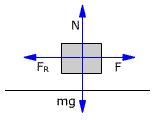
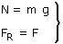

a)
Sí el bloque no se mueve es porque la fuerza de rozamiento contrarresta a la fuerza aplicada: valdrá lo mismo que esta e irá en sentido contrario
|  |
 |
FR = 12 N
Para que el bloque esté quieto la fuerza de rozamiento tendrá que valer 12 N. Vamos a ver si puede tomar este valor. La fuerza de rozamiento máxima vale:

La fuerza de rozamiento para que el cuerpo no se mueva (12 N) supera el valor máximo (8.8 N). Luego el cuerpo sí que se mueve y la hipótesis es falsa